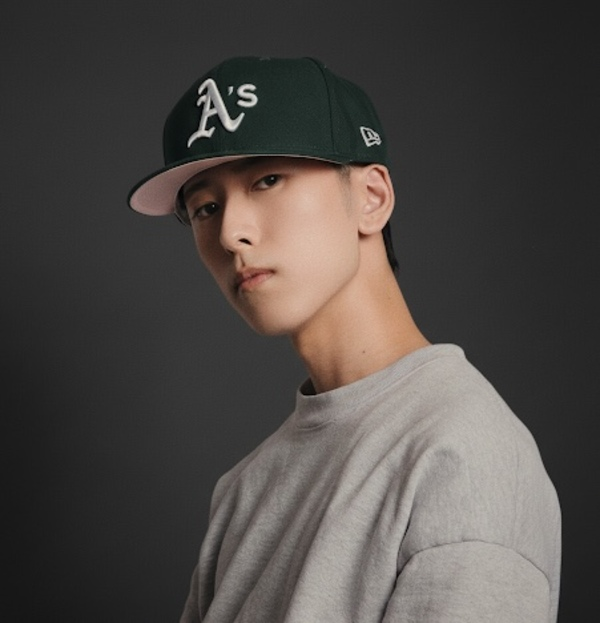

便利になるほど
幸福になる？
便利さを追うなかで本来的な生き方を失うと、逆に不幸になることもあるとETHEREALは考えます。
自然とのつながり、土地に根づいた文化、人と人との関係。便利さや効率を追い求めるなかで、私たちは人間本来の生き方を少しずつ手放してきたのではないでしょうか。
社会の変化を見つめながら、自然や文化に自ら触れること、人と語り合うことを通して、これからの暮らしを考えていきます。
問いを見てみる ↗断定や対立を目的にせず、異なる視点に耳を傾ける。ETHEREALは、確かな情報と一人ひとりの経験を大切にします。
便利さを追うなかで本来的な生き方を失うと、逆に不幸になることもあるとETHEREALは考えます。
地域での変化を丁寧に見つめ、背景の異なる人々の声を聴きます。
土地に根ざした知恵や文化を、体験を通じて次の世代へつなぎます。
※健康や社会に関するテーマでは、公的資料や信頼できる情報源を確認し、事実・意見・個人の経験を区別して発信します。
ETHEREALは、社会の変化を自分ごととして見つめながら、人と自然、人と文化のつながりを育てるプロジェクトです。
大きな主張より、確かな対話と小さな実践を。愛知県を中心に、額田郡幸田町から活動を育てていきます。異なる経験を持つ人が安心して参加できる場をつくります。
まず自分で土に触れ、農業に携わる方の話を聞いてみる。体験と対話を通じて、自然や地域の営みについて学んでいきます。
場所や時期など、具体的な内容はこれから考えていきます。

2020年以降の社会の変化をきっかけに、自然や文化、人間らしい暮らしについて考えるようになりました。
愛知県額田郡幸田町を拠点に、まずは自分で土に触れ、農業に携わる方の話を聞くことから始めたいと思っています。
活動への参加や農業についての情報交換、企画・協働のご相談はInstagramのDMからご連絡ください。